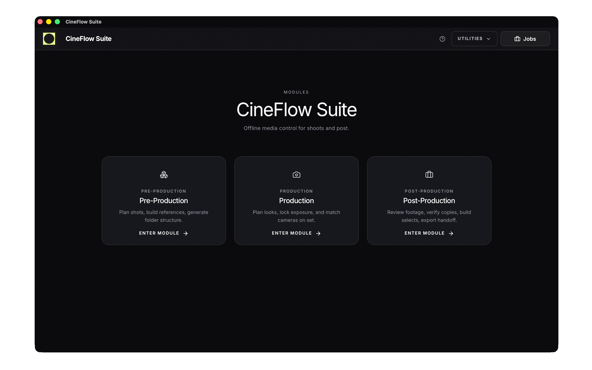

Customer Support Hub
CineFlow Suite is a local-first creative toolkit designed for filmmakers, photographers, and production teams. All processing happens on your device. No accounts, no cloud, no subscriptions.
For support requests, bug reports, or general inquiries, please email us directly:
Support requests are typically answered within 1–2 business days.
No. CineFlow runs fully offline and does not require login or registration.
No. All data is processed locally on your machine. Nothing is uploaded or tracked.
All files and exports are saved locally on your device, in locations you define.
macOS: macOS 13 or newer recommended.
Windows: Windows 10 / 11 supported.